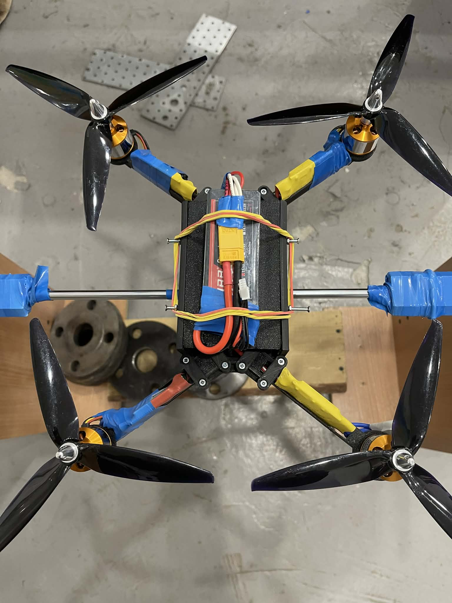
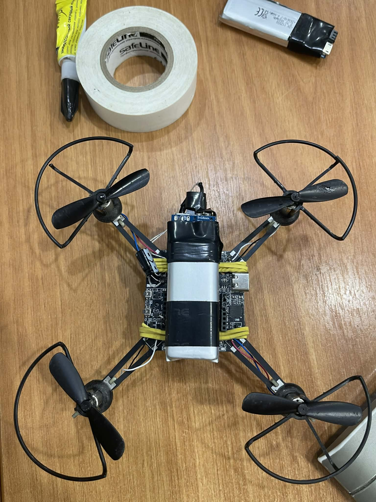
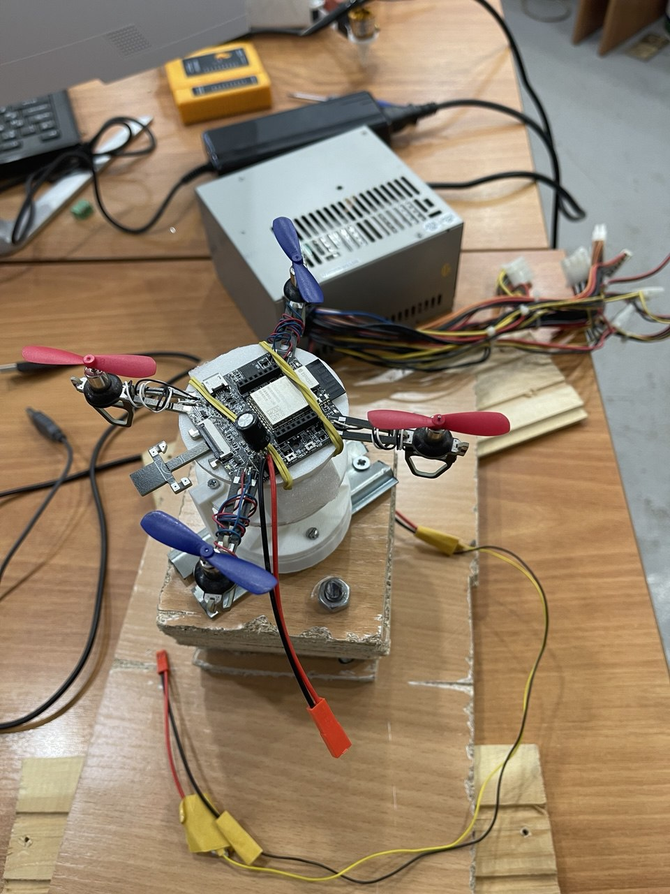

Наши БПЛА
Два типа квадрокоптеров для исследования систем управления

Тип 1 — Полноразмерный
Полноразмерный UAV собственной сборки
Квадрокоптер собран с нуля: 3D-печатный корпус, BLDC-моторы, ESC и аккумулятор LiPo 4S. Прошивка разработана на базе проекта Flix.

Тип 2 — Прототип ESP32
Малый прототип на базе ESP32-Drone
Аппаратная платформа Espressif ESP32-Drone с полностью переписанным программным комплексом управления полётом.

Тип 1 — Готовая сборка
Квадрокоптер собственной сборки
Собран с нуля на 3D-печатном корпусе с BLDC-моторами A2212, ESC и аккумулятором LiPo 4S.

Тип 2 — ESP-Drone
БПЛА на базе Espressif ESP32-Drone
Готовая аппаратная платформа с переписанной прошивкой. Компактен, оснащён Wi-Fi и датчиком MPU-6050.